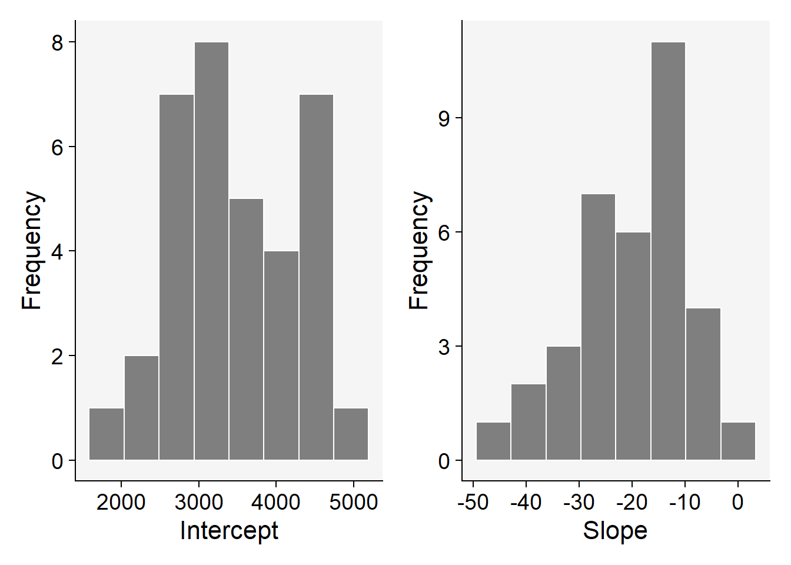

library(gsheet)
estande <- gsheet2tbl("https://docs.google.com/spreadsheets/d/1bq2N19DcZdtax2fQW9OHSGMR0X2__Z9T/edit#gid=401662555")Regressão linear
Para dados quantitativos, a análise de regressão costuma ser mais adequada do que a análise de variância. A regressão permite modelar e prever a relação entre uma variável dependente e uma ou mais variáveis independentes.
Regressão linear simples
Na regressão linear simples determina-se uma linha reta que melhor represente essa relação, permitindo prever valores da variável dependente a partir dos valores da variável independente.
Carregando a planilha
Visualização
O geom_jitter() forma o gráfico de dispersão. Visualização da média e os intervalos de confiança dos dados.
library(ggplot2)
m1 <- estande |>
ggplot(aes(trat, nplants))+
geom_jitter(width = 0.1, alpha = 0.2)+
#facet_wrap(~ trat)+
stat_summary(fun.data =
"mean_cl_boot", size= 0.5, color=
"blue")
m1
Analisando cada experimento isoladamente
A regressão linear precisa definir um modelo que melhor se ajuste a curva ou linha de resposta. Portanto, deve-se fazer a análise para cada experimento ou analisar em grupos (modelos mistos).
A função geom_smooth(se = F, method = lm) permite adicionar uma linha de regressão linear sem intervalo de confiança.
Experimento 1
R² mostra a relação entre a reta e os pontos que estão sendo observados (relação entre váriavel dependente e independente). O R² varia de 0 a 1.
Quanto mais próximo de 1 o valor do R², maior é a proporção da variabilidade na variável dependente que pode ser explicada pelo modelo de regressão. R² mais próximo de 0 indica que o modelo explica uma menor proporção da variabilidade na variável dependente.
library(dplyr)
exp1 <- estande |>
filter(exp == 1)
exp1 |>
ggplot(aes(trat, nplants))+
geom_point()+
ylim(0,100)+
geom_smooth(se = F, method = lm)
lm1 <- lm(nplants ~trat,
data = exp1)
summary(lm1)
Call:
lm(formula = nplants ~ trat, data = exp1)
Residuals:
Min 1Q Median 3Q Max
-25.500 -6.532 1.758 8.573 27.226
Coefficients:
Estimate Std. Error t value Pr(>|t|)
(Intercept) 52.5000 4.2044 12.487 1.84e-11 ***
trat -0.2419 0.1859 -1.301 0.207
---
Signif. codes: 0 '***' 0.001 '**' 0.01 '*' 0.05 '.' 0.1 ' ' 1
Residual standard error: 15 on 22 degrees of freedom
Multiple R-squared: 0.07148, Adjusted R-squared: 0.02928
F-statistic: 1.694 on 1 and 22 DF, p-value: 0.2066Experimento 2
exp2 <- estande |>
filter(exp == 2)
exp2 |>
ggplot(aes(trat, nplants))+
geom_point()+
ylim(0,100)+
geom_smooth(method= "lm",
se=FALSE,
formula = y ~poly(x,2), color="black")+
geom_smooth(method = "lm",
se = FALSE)
# modelo linear
exp2$trat2 <- exp2$trat^2
# primeira ordem
lm2 <- lm(nplants ~ trat,
data = exp2)
# segunda ordem ou quadrático
lm3 <- lm(nplants ~ trat + trat2 ,
data = exp2)
summary(lm2)
Call:
lm(formula = nplants ~ trat, data = exp2)
Residuals:
Min 1Q Median 3Q Max
-25.7816 -7.7150 0.5653 8.1929 19.2184
Coefficients:
Estimate Std. Error t value Pr(>|t|)
(Intercept) 60.9857 3.6304 16.798 4.93e-14 ***
trat -0.7007 0.1605 -4.365 0.000247 ***
---
Signif. codes: 0 '***' 0.001 '**' 0.01 '*' 0.05 '.' 0.1 ' ' 1
Residual standard error: 12.95 on 22 degrees of freedom
Multiple R-squared: 0.4641, Adjusted R-squared: 0.4398
F-statistic: 19.05 on 1 and 22 DF, p-value: 0.0002473summary(lm3)
Call:
lm(formula = nplants ~ trat + trat2, data = exp2)
Residuals:
Min 1Q Median 3Q Max
-25.439 -6.019 1.789 8.016 19.561
Coefficients:
Estimate Std. Error t value Pr(>|t|)
(Intercept) 66.30156 4.42097 14.997 1.08e-12 ***
trat -1.77720 0.58467 -3.040 0.00623 **
trat2 0.02223 0.01166 1.906 0.07036 .
---
Signif. codes: 0 '***' 0.001 '**' 0.01 '*' 0.05 '.' 0.1 ' ' 1
Residual standard error: 12.24 on 21 degrees of freedom
Multiple R-squared: 0.5432, Adjusted R-squared: 0.4997
F-statistic: 12.49 on 2 and 21 DF, p-value: 0.0002675AIC(lm2)[1] 194.9597AIC(lm3)[1] 193.1284Experimento 3
exp3 <- estande |>
filter(exp==3)
exp3 |>
ggplot(aes(trat, nplants))+
geom_point()+
ylim(0,100)+
geom_smooth(se = F, method = lm)
exp3# A tibble: 24 × 4
exp trat bloco nplants
<dbl> <dbl> <dbl> <dbl>
1 3 0 1 101
2 3 0 2 94
3 3 0 3 93
4 3 0 4 105
5 3 3 1 93
6 3 3 2 97
7 3 3 3 96
8 3 3 4 109
9 3 6 1 99
10 3 6 2 95
# ℹ 14 more rows#modelo linear
lm3 <- lm(nplants ~trat,
data = exp3)
summary(lm3)
Call:
lm(formula = nplants ~ trat, data = exp3)
Residuals:
Min 1Q Median 3Q Max
-26.5887 -3.9597 0.7177 5.5806 19.8952
Coefficients:
Estimate Std. Error t value Pr(>|t|)
(Intercept) 95.7500 2.9529 32.425 < 2e-16 ***
trat -0.7634 0.1306 -5.847 6.97e-06 ***
---
Signif. codes: 0 '***' 0.001 '**' 0.01 '*' 0.05 '.' 0.1 ' ' 1
Residual standard error: 10.53 on 22 degrees of freedom
Multiple R-squared: 0.6085, Adjusted R-squared: 0.5907
F-statistic: 34.19 on 1 and 22 DF, p-value: 6.968e-06Modelo GLM
O Modelo Linear Generalizado (GLM) representa uma alternativa ao modelo linear convencional, sendo uma extensão que oferece flexibilidade para lidar com diversos tipos de variáveis resposta(categóricas ou contínuas). o GLM também permite modelar relações não-lineares entre a variável resposta e as variáveis explicativas.
glm1 <- glm(nplants ~ trat, family = "gaussian", data = exp1)
summary(glm1)
Call:
glm(formula = nplants ~ trat, family = "gaussian", data = exp1)
Coefficients:
Estimate Std. Error t value Pr(>|t|)
(Intercept) 52.5000 4.2044 12.487 1.84e-11 ***
trat -0.2419 0.1859 -1.301 0.207
---
Signif. codes: 0 '***' 0.001 '**' 0.01 '*' 0.05 '.' 0.1 ' ' 1
(Dispersion parameter for gaussian family taken to be 224.9751)
Null deviance: 5330.5 on 23 degrees of freedom
Residual deviance: 4949.5 on 22 degrees of freedom
AIC: 202
Number of Fisher Scoring iterations: 2glm1b <- glm(nplants ~trat, family = "poisson",
data = exp1)
summary(glm1b)
Call:
glm(formula = nplants ~ trat, family = "poisson", data = exp1)
Coefficients:
Estimate Std. Error z value Pr(>|z|)
(Intercept) 3.963738 0.039359 100.708 < 2e-16 ***
trat -0.005199 0.001862 -2.793 0.00523 **
---
Signif. codes: 0 '***' 0.001 '**' 0.01 '*' 0.05 '.' 0.1 ' ' 1
(Dispersion parameter for poisson family taken to be 1)
Null deviance: 111.37 on 23 degrees of freedom
Residual deviance: 103.31 on 22 degrees of freedom
AIC: 243.58
Number of Fisher Scoring iterations: 4AIC(glm1b)[1] 243.5839glm2 <- glm(nplants ~ trat, family = "gaussian", data = exp1)
summary(glm2)
Call:
glm(formula = nplants ~ trat, family = "gaussian", data = exp1)
Coefficients:
Estimate Std. Error t value Pr(>|t|)
(Intercept) 52.5000 4.2044 12.487 1.84e-11 ***
trat -0.2419 0.1859 -1.301 0.207
---
Signif. codes: 0 '***' 0.001 '**' 0.01 '*' 0.05 '.' 0.1 ' ' 1
(Dispersion parameter for gaussian family taken to be 224.9751)
Null deviance: 5330.5 on 23 degrees of freedom
Residual deviance: 4949.5 on 22 degrees of freedom
AIC: 202
Number of Fisher Scoring iterations: 2glm2b <- glm(nplants ~trat, family = "poisson",
data = exp2)
summary(glm2b)
Call:
glm(formula = nplants ~ trat, family = "poisson", data = exp2)
Coefficients:
Estimate Std. Error z value Pr(>|z|)
(Intercept) 4.134189 0.037583 110.003 < 2e-16 ***
trat -0.016270 0.002059 -7.901 2.76e-15 ***
---
Signif. codes: 0 '***' 0.001 '**' 0.01 '*' 0.05 '.' 0.1 ' ' 1
(Dispersion parameter for poisson family taken to be 1)
Null deviance: 139.783 on 23 degrees of freedom
Residual deviance: 69.578 on 22 degrees of freedom
AIC: 210.24
Number of Fisher Scoring iterations: 4AIC(glm2b)[1] 210.2353glm3 <- glm(nplants ~ trat + (trat| exp), family = "gaussian", data = exp1)
summary(glm3)
Call:
glm(formula = nplants ~ trat + (trat | exp), family = "gaussian",
data = exp1)
Coefficients: (1 not defined because of singularities)
Estimate Std. Error t value Pr(>|t|)
(Intercept) 52.5000 4.2044 12.487 1.84e-11 ***
trat -0.2419 0.1859 -1.301 0.207
trat | expTRUE NA NA NA NA
---
Signif. codes: 0 '***' 0.001 '**' 0.01 '*' 0.05 '.' 0.1 ' ' 1
(Dispersion parameter for gaussian family taken to be 224.9751)
Null deviance: 5330.5 on 23 degrees of freedom
Residual deviance: 4949.5 on 22 degrees of freedom
AIC: 202
Number of Fisher Scoring iterations: 2AIC(glm3)[1] 202.0045glm3b <- glm(nplants ~trat + (trat| exp), family = "poisson",
data = exp3)
summary(glm3b)
Call:
glm(formula = nplants ~ trat + (trat | exp), family = "poisson",
data = exp3)
Coefficients: (1 not defined because of singularities)
Estimate Std. Error z value Pr(>|z|)
(Intercept) 4.571590 0.029539 154.762 < 2e-16 ***
trat -0.009965 0.001488 -6.697 2.13e-11 ***
trat | expTRUE NA NA NA NA
---
Signif. codes: 0 '***' 0.001 '**' 0.01 '*' 0.05 '.' 0.1 ' ' 1
(Dispersion parameter for poisson family taken to be 1)
Null deviance: 77.906 on 23 degrees of freedom
Residual deviance: 29.952 on 22 degrees of freedom
AIC: 183.93
Number of Fisher Scoring iterations: 4AIC(glm3b)[1] 183.9324Modelo misto
Modelo que permite que as observações sejam divididas em grupos ou subgrupos.
library(remotes)
##remotes::install_github("emdelponte/r4pde", force = TRUE)
library(r4pde)
wr <- WhiteMoldSoybean
wr |>
ggplot(aes(inc, yld, group = factor(study)))+
geom_point()+
facet_wrap(~ study)+
geom_smooth(method = "lm", se = F)+
theme_minimal()
mofo1 <- lm(yld ~inc,
data = wr)
summary(mofo1)
Call:
lm(formula = yld ~ inc, data = wr)
Residuals:
Min 1Q Median 3Q Max
-1657.85 -594.50 -91.32 531.76 1693.15
Coefficients:
Estimate Std. Error t value Pr(>|t|)
(Intercept) 3299.619 56.451 58.451 < 2e-16 ***
inc -9.261 2.108 -4.393 1.45e-05 ***
---
Signif. codes: 0 '***' 0.001 '**' 0.01 '*' 0.05 '.' 0.1 ' ' 1
Residual standard error: 745.8 on 380 degrees of freedom
Multiple R-squared: 0.04833, Adjusted R-squared: 0.04582
F-statistic: 19.3 on 1 and 380 DF, p-value: 1.452e-05library(broom)
mofo2 <- wr |>
group_by(study)|>
do(tidy(lm(.$yld~.$inc), conf.int=TRUE))
mofo2# A tibble: 70 × 8
# Groups: study [35]
study term estimate std.error statistic p.value conf.low conf.high
<dbl> <chr> <dbl> <dbl> <dbl> <dbl> <dbl> <dbl>
1 1 (Intercept) 3329. 86.8 38.3 4.60e-13 3138. 3520.
2 1 .$inc -14.2 2.08 -6.85 2.78e- 5 -18.8 -9.64
3 2 (Intercept) 2682. 48.6 55.2 8.55e-15 2575. 2789.
4 2 .$inc -6.93 1.49 -4.66 6.89e- 4 -10.2 -3.66
5 3 (Intercept) 4017. 61.6 65.2 1.37e-15 3882. 4153.
6 3 .$inc -18.6 1.71 -10.9 3.11e- 7 -22.4 -14.9
7 4 (Intercept) 2814. 151. 18.6 1.15e- 9 2481. 3147.
8 4 .$inc -43.5 16.8 -2.58 2.56e- 2 -80.5 -6.38
9 5 (Intercept) 3317. 234. 14.2 2.07e- 8 2802. 3832.
10 5 .$inc -21.2 5.69 -3.72 3.36e- 3 -33.7 -8.67
# ℹ 60 more rowsdf <- mofo2 |> filter(term == ".$inc")
mean(df$estimate)[1] -19.52932fit_all <- wr%>%
group_by(study) |>
do(broom::tidy(lm(.$yld ~ .$inc), conf.int=TRUE))
fit_all# A tibble: 70 × 8
# Groups: study [35]
study term estimate std.error statistic p.value conf.low conf.high
<dbl> <chr> <dbl> <dbl> <dbl> <dbl> <dbl> <dbl>
1 1 (Intercept) 3329. 86.8 38.3 4.60e-13 3138. 3520.
2 1 .$inc -14.2 2.08 -6.85 2.78e- 5 -18.8 -9.64
3 2 (Intercept) 2682. 48.6 55.2 8.55e-15 2575. 2789.
4 2 .$inc -6.93 1.49 -4.66 6.89e- 4 -10.2 -3.66
5 3 (Intercept) 4017. 61.6 65.2 1.37e-15 3882. 4153.
6 3 .$inc -18.6 1.71 -10.9 3.11e- 7 -22.4 -14.9
7 4 (Intercept) 2814. 151. 18.6 1.15e- 9 2481. 3147.
8 4 .$inc -43.5 16.8 -2.58 2.56e- 2 -80.5 -6.38
9 5 (Intercept) 3317. 234. 14.2 2.07e- 8 2802. 3832.
10 5 .$inc -21.2 5.69 -3.72 3.36e- 3 -33.7 -8.67
# ℹ 60 more rowsp3 <- fit_all |>
filter(term == "(Intercept)") |>
ggplot(aes(x = estimate))+
geom_histogram(bins = 8, color = "white", fill = "gray50")+
theme_r4pde()+
labs(x = "Intercept", y = "Frequency")
p4 <- fit_all |>
filter(term == ".$inc") |>
ggplot(aes(x = estimate))+
geom_histogram(bins = 8, color = "white", fill = "gray50")+
theme_r4pde()+
labs(x = "Slope", y = "Frequency")
library(patchwork)
p3 | p4